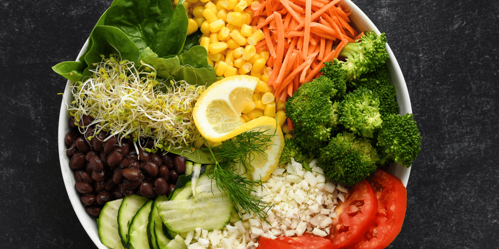
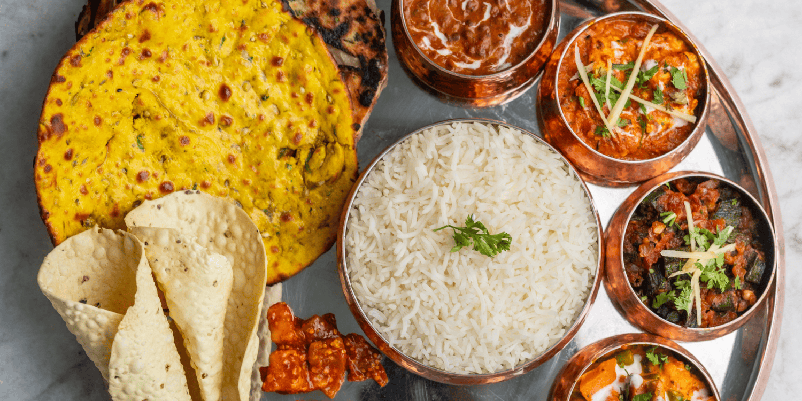

Embark on a flavorful journey across Sri Lanka’s top vegetarian restaurants! Whether you crave authentic South Indian dosas, fusion vegan delights, or traditional Sri Lankan rotis, these handpicked eateries promise unforgettable plant-based experiences. Perfect for food lovers, health-conscious travelers, and adventure seekers alike!

Located in the heart of Colombo, Govinda’s Vegetarian Restaurant is one of the most popular choices among tourists looking for authentic and flavorful vegetarian food. Specializing in South Indian cuisine, the restaurant is famous for its crispy dosas, fluffy idlis, and rich, aromatic curries. The ambiance is warm and welcoming, making it an ideal spot for travelers who enjoy a traditional yet casual dining experience.
Moving outside Colombo, Balaji Dosai in Kandy is a well-known vegetarian hotspot among tourists visiting the cultural capital of Sri Lanka. This restaurant offers affordable and authentic South Indian food, making it an excellent choice for budget travelers and backpackers. The Masala Dosa at Balaji Dosai is the most famous dish, served with a flavorful potato filling and accompanied by fresh coconut chutney and sambar. Other popular choices include the Idli-Sambar Set and the Vegetable Thali, which provides a complete and satisfying meal.
In the scenic town of Ella, Vegan Tranquil is a hidden gem for vegetarian and vegan travelers. This restaurant offers a mix of Sri Lankan and fusion plant-based cuisine, using fresh, locally sourced ingredients. A standout dish at Vegan Tranquil is the Coconut Lentil Curry, made with rich Sri Lankan spices and served with red rice. Another favorite is the Vegan Roti, a soft, whole-grain flatbread stuffed with spiced vegetables. The restaurant also serves fresh tropical smoothies and herbal teas, perfect for unwinding after a hike to Little Adam’s Peak or Nine Arches Bridge.
For travelers exploring Sri Lanka’s southern coast, Roti Hut in Mirissa is a must-visit vegetarian-friendly eatery. This laid-back restaurant specializes in Sri Lankan-style roti with vegetarian fillings, offering a perfect balance of taste and affordability. Tourists love the Cheese and Vegetable Roti, as well as the Banana and Chocolate Roti for dessert. The restaurant also serves delicious coconut sambol, dhal curry, and fresh tropical fruit juices. Located near Mirissa Beach, Roti Hut is an excellent spot for travelers looking for a quick, delicious vegetarian meal before or after a beachside adventure.